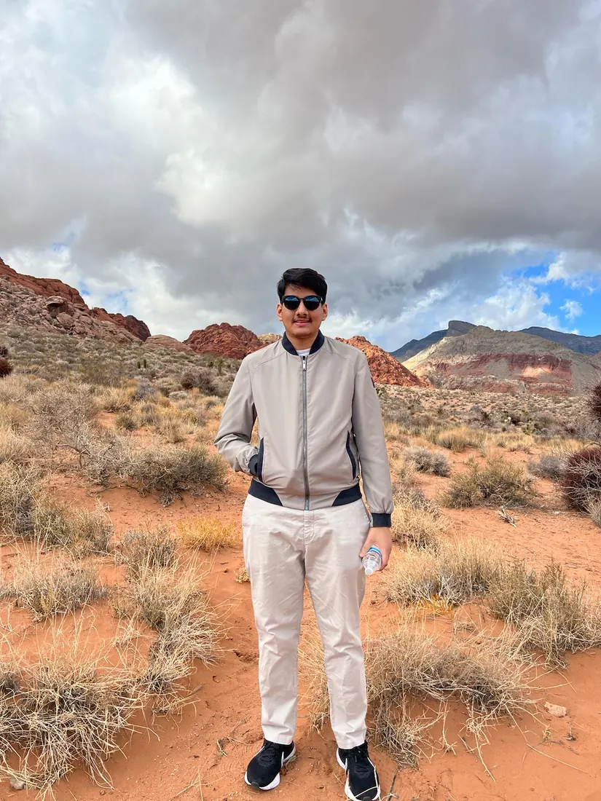
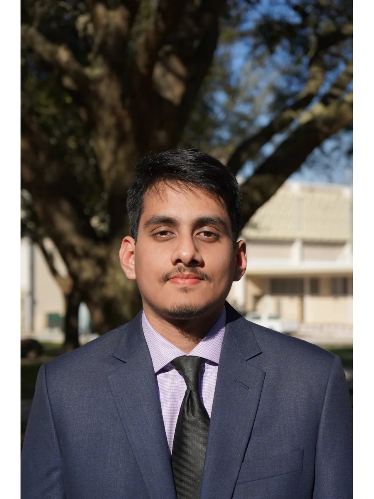

Fun tidbit!
My first coding project was a
Music Player
- and even now, the most used app on my phone is
Spotify.
My first coding project was a Music Player - and even now, the most used app on my phone is
Spotify.
EXPERIENCE
Software Engineer Intern | Rocket Mortgage | Detroit, MI | May '25 - August '25
• Migrated core microservices from AWS ECS to Kubernetes (EKS) with an Istio service mesh, enforcing Zero Trust networking via default-deny policies and mTLS; improved deployment speed ~50% and reduced API latency ~33%.
• Engineered a distributed multi-agent mortgage-processing system (Google A2A, Gemini, Anthropic MCP) with runtime auto-discovery of agents and tools, cutting query latency ~40% across 100+ concurrent sessions.
• Built .NET 8/Angular self-service features for non-conforming loan products with full-stack validation, reducing support requests ~80% and unlocking ~$246M in addressable loan volume.
Software Engineer Intern | Rocket Mortgage | Detroit, MI | May '24 - August '24
• Owned end-to-end data-contract mapping across the Angular UI and .NET backend for high-velocity refinance flows, eliminating systemic Sev-2 rate-lock qualification failures.
• Flagged licensing and security risks from Postman's cloud shift and drove migration of 100+ API collections to Bruno (open-source); rewrote CircleCI pipelines with Bruno CLI and Docker to automate pre-production validation and cut rollbacks.
• Overhauled the Rancher local development environment, cutting engineer onboarding from 4 days to 1 and enabling local E2E testing with beta-pointing for hotfix validation.
Database Developer Intern | VS One World (IFS Partner) | Remote | May '23 - July '23
• Refactored legacy PL/SQL packages in IFS Applications (ERP) and optimized complex nested queries.
• Designed and implemented database structures in MSSQL and improved performance by optimizing T-SQL queries.
• Integrated Crystal Reports with MSSQL and delivered parameterized reports across 8 user-specific customization requests.
• Documented and maintained 3 entity-relationship diagrams for team reference and collaboration.
Undergraduate Teaching Assistant | University of South Florida | Tampa, FL | Aug '24 - May '26
• Led review sessions on RISC-V assembly, instruction set design, and CPU pipelines, translating complex concepts into clear, structured explanations for 50+ students.
• Supported students with assignments and projects, debugging RISC-V assembly, analyzing datapath diagrams, and solving problems in memory hierarchy and control logic.
• Mentored students one-on-one on computer organization topics, strengthening problem-solving skills and technical confidence.
USF Green & Gold Tour Guide | Office of Admissions | USF Tampa, FL | May '23 - Present
• Conducted more than 150 campus tours per semester, effectively serving over 15,000 guests, showcasing USF's facilities and academic programs to prospective students and their families.
• Collaborated with the admissions team in coordinating large-scale events and group visits, effectively managing and engaging over 1,200 daily attendees, bolstering freshman experience and involvement.
• Enhanced office management by streamlining schedule organization, appointment coordination, and supporting team members, ensuring seamless operational efficiency.
EDUCATION
University of South Florida | Bachelor of Science in Computer Science | May 2026
• GPA: 3.92 / 4.00
TECHNICAL SKILLS
• Languages: Python, C#, Java, C/C++, Rust, TypeScript/JavaScript, SQL
• Frameworks: .NET 8/ASP.NET Core, Angular, React, Node.js/Express
• AI & ML: vLLM, PyTorch, Hugging Face Transformers, LangChain, RAG, Anthropic MCP, LLM Routing, KV-Cache Optimization, LLM Evaluation & Red-teaming
• Cloud & DevOps: AWS, Kubernetes, Terraform, Docker, Rancher, GitHub Actions/CircleCI, OpenTelemetry, Dynatrace, Splunk
• Data & Testing: PostgreSQL, MySQL, Redis, Kafka; xUnit, Jest, Playwright, Karma
RELEVANT COURSEWORK
• Data Structures & Algorithms • Artificial Intelligence • Machine Learning • Computer Architecture • Operating Systems • Database Design • Cryptographic Hardware & Embedded Systems • Computer Networks
Show more courses ▼